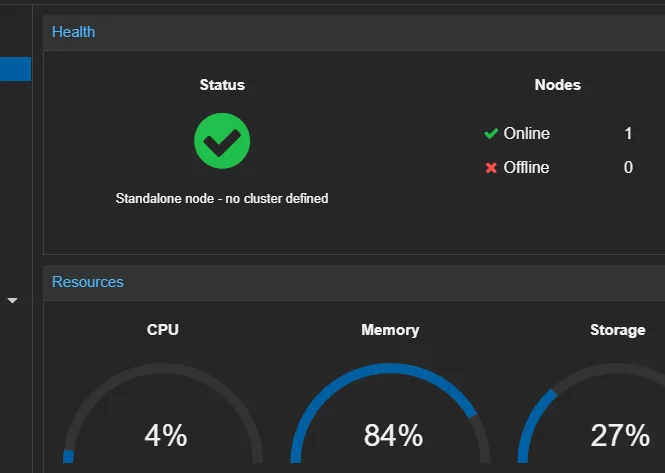
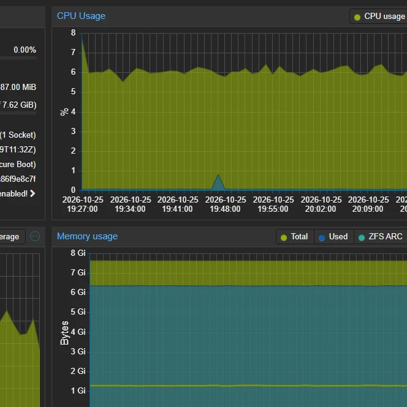
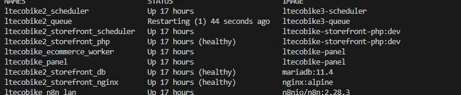
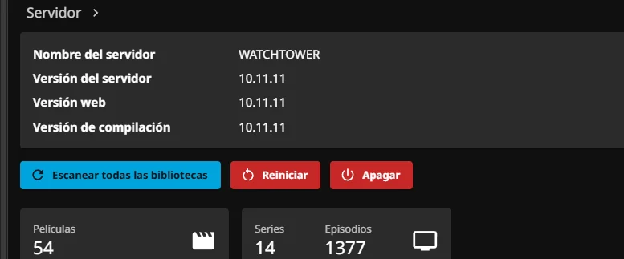
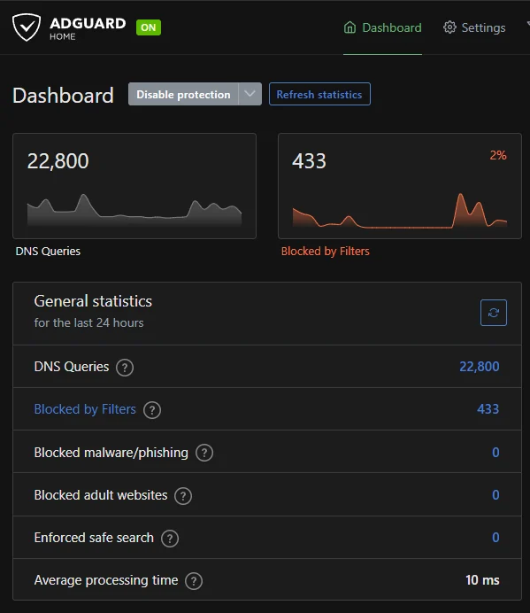

Proxmox VE
Host de virtualización para máquinas virtuales y contenedores LXC.
Mi laboratorio personal para practicar virtualización, administración de sistemas, redes y diagnóstico técnico. Es un entorno de aprendizaje; no lo presento como infraestructura de una empresa.
Componentes que configuro y administro en equipos personales.
Host de virtualización para máquinas virtuales y contenedores LXC.
Servicios Linux y aplicaciones contenerizadas con supervisión de estados y registros.
Máquina virtual destinada a prácticas de firewall y conectividad; no es el router principal de mi casa.
AdGuard Home y Tailscale para experimentar con resolución de nombres y acceso privado.
Servicio multimedia instalado como contenedor LXC.
Comprobaciones de red, DNS, contenedores, registros y estado de servicios.
Diagrama simplificado: no contiene direcciones IP, puertos ni rutas de administración reales.
AdGuard Home proporciona DNS en la red; Tailscale permite acceso remoto autorizado a equipos configurados.
Interfaces y diagnósticos tomados de mi homelab, con recortes para no publicar direcciones IP, consultas DNS, actividad personal ni rutas internas. Las capturas reflejan un momento concreto, no métricas actuales.

Supervisión del host de Proxmox y recursos asignados a máquinas virtuales y contenedores.

Revisión de consumo, carga y capacidad para decidir dónde ejecutar servicios.

Comprobación real de contenedores: la captura incluye un proceso en reinicio que se estaba diagnosticando. Es evidencia de revisión técnica, no de que todos los servicios estuvieran saludables.

Panel administrativo de un servicio multimedia desplegado en un contenedor LXC.

Estadísticas de consultas DNS, bloqueos y tiempo de respuesta; se excluyeron clientes y dominios concretos.
Capturas reales, recortadas por privacidad. El diagrama anterior sigue siendo conceptual. No representan datos de producción de terceros ni una auditoría de seguridad.
Separar fallas de red, resolución DNS, aplicación y permisos.
Consultar servicios, registros, rutas y configuración antes de intervenir.
Hacer cambios controlados, comprobar el resultado y documentar aprendizajes.
Las imágenes de la galería son capturas reales del laboratorio editadas únicamente mediante recortes para proteger la privacidad. La imagen de portada es una composición conceptual, no una fotografía documental de las instalaciones.